This notebook replicates the models in Godley and Lavoie (2007 ch. 5).
Required packages for this analysis:
library(sfcr)
library(tidyverse)
#> ── Attaching packages ─────────────────────────────────────── tidyverse 1.3.0 ──
#> ✔ ggplot2 3.3.2 ✔ purrr 0.3.4
#> ✔ tibble 3.0.4 ✔ dplyr 1.0.2
#> ✔ tidyr 1.1.2 ✔ stringr 1.4.0
#> ✔ readr 1.4.0 ✔ forcats 0.5.0
#> ── Conflicts ────────────────────────────────────────── tidyverse_conflicts() ──
#> ✖ dplyr::filter() masks stats::filter()
#> ✖ dplyr::lag() masks stats::lag()Model LP
Equations
The first step is to write down the equations that define the endogenous variables. I will name the equations as it will make it easier to change them later when we move to models “LP2” and “LP3”:
lp_eqs <-
sfcr_set(
eq1 = Y ~ C + G,
eq2 = YDr ~ Y - TX + rb[-1] * Bh[-1] + BLh[-1],
eq3 = TX ~ theta * (Y + rb[-1] * Bh[-1] + BLh[-1]),
eq4 = V ~ V[-1] + (YDr - C) + CG,
eq5 = CG ~ (pbl - pbl[-1]) * BLh[-1],
eq6 = C ~ alpha1 * YDEr + alpha2 * V[-1],
eq7 = VE ~ V[-1] + (YDEr - C) + CG,
eq8 = Hh ~ V - Bh - pbl * BLh,
eq9 = Hd ~ VE - Bd - pbl * BLd,
eq10 = Bd ~ (VE * lambda20) + VE * (lambda22 * rb + lambda23 * ERrbl) + lambda24 * (YDEr),
eq11 = BLd ~ VE * (lambda30 + lambda32 * rb + lambda33 * ERrbl + lambda34 * (YDEr/VE))/pbl,
eq12 = Bh ~ Bd,
eq13 = BLh ~ BLd,
eq14 = Bs ~ Bs[-1] + (G + rb[-1] * Bs[-1] + BLs[-1]) - (TX + rb[-1] * Bcb[-1]) - (d(BLs) * pbl),
eq15 = Hs ~ Hs[-1] + d(Bcb),
eq16 = Bcb ~ Bs - Bh,
eq17 = BLs ~ BLh,
eq18 = ERrbl ~ rbl + chi * ((pebl - pbl)/pbl),
eq19 = rbl ~ 1/pbl,
eq20 = pebl ~ pbl,
eq21 = CGE ~ chi * (pebl - pbl) * BLh,
eq22 = YDEr ~ YDr[-1]
)Next we define the parameters and the values for the exogenous variables:
lp_external <- sfcr_set(
G ~ 20,
rb ~ 0.03,
pbl ~ 20,
theta ~ 0.1938,
alpha1 ~ 0.8,
alpha2 ~ 0.2,
lambda20 ~ 0.44196,
lambda22 ~ 1.1,
lambda23 ~ -1,
lambda24 ~ -0.03,
lambda30 ~ .3997,
lambda32 ~ -1,
lambda33 ~ 1.1,
lambda34 ~ -0.03,
chi ~ 0.1
)Baseline model
And simulate the steady state values:
lp <- sfcr_baseline(
equations = lp_eqs,
external = lp_external,
periods = 100,
hidden = c("Hs" = "Hh"))DAG structure of the model
sfcr_dag_cycles_plot(lp_eqs)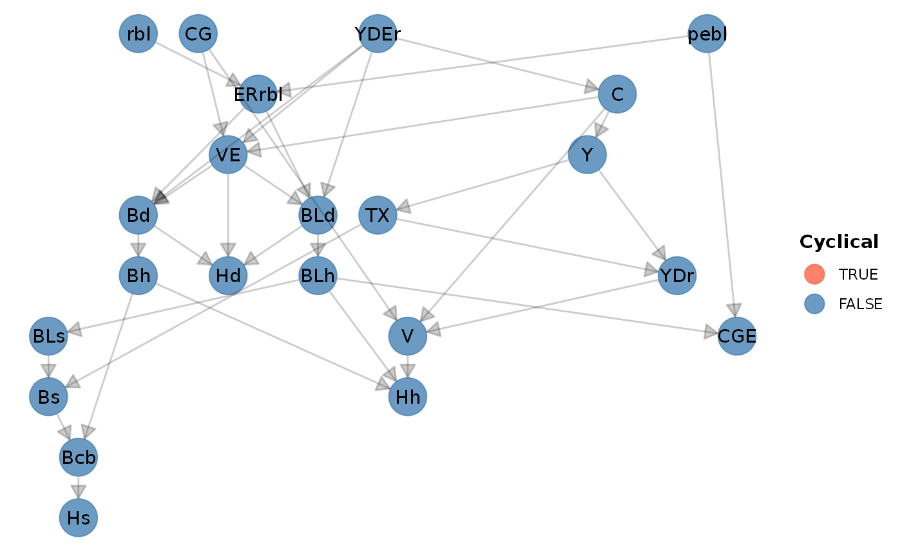
As we can see, there’s no cycle in this model.
Matrices of model LP
Balance-sheet matrix
bs_lp <- sfcr_matrix(
columns = c("Households", "Firms", "Government", "Central Bank"),
codes = c("h", "f", "g", "cb"),
c("Money", h = "+Hh", cb = "-Hs"),
c("Bills", h = "+Bh", g = "-Bs", cb = "+Bcb"),
c("Bonds", h = "+BLh * pbl", g = "-BLs * pbl"),
c("Balance", h = "-V", g = "+V")
)Validate:
sfcr_validate(bs_lp, lp, which = "bs")
#> Water tight! The balance-sheet matrix is consistent with the simulated model.Display:
sfcr_matrix_display(bs_lp, which = "bs")| Households | Firms | Government | \(\sum\) | |
|---|---|---|---|---|
| Money | \(+Hh\) | \(-Hs\) | ||
| Bills | \(+Bh\) | \(-Bs\) | \(+Bcb\) | |
| Bonds | \(+BLh\cdot pbl\) | \(-BLs\cdot pbl\) | \(0\) | |
| Balance | \(-V\) | \(+V\) | \(0\) | |
| \(\sum\) | \(0\) | \(0\) | \(0\) | \(0\) |
Transactions-flow matrix
tfm_lp <- sfcr_matrix(
columns = c("Households", "Firms", "Government", "CB_current", "CB_capital"),
codes = c("h", "f", "g", "cbc", "cbk"),
c("Consumption", h = "-C", f = "+C"),
c("Gov. Exp.", f = "+G", g = "-G"),
c("Income", h = "+Y", f = "-Y"),
c("Int. bills", h = "+rb[-1] * Bh[-1]", g = "-rb[-1] * Bs[-1]", cbc = "+rb[-1] * Bcb[-1]"),
c("Int. bonds", h = "+BLh[-1]", g = "-BLs[-1]"),
c("CB profits", g = "+rb[-1] * Bcb[-1]", cbc = "-rb[-1] * Bcb[-1]"),
c("Taxes", h = "-TX", g = "+TX"),
c("Ch. money", h = "-d(Hh)", cbk = "+d(Hs)"),
c("Ch. bills", h = "-d(Bh)", g = "+d(Bs)", cbk = "-d(Bcb)"),
c("Ch. bonds", h = "-d(BLh) * pbl", g = "+d(BLh) * pbl")
)Display:
sfcr_matrix_display(tfm_lp)| Households | Firms | Government | CB_current | CB_capital | \(\sum\) | |
|---|---|---|---|---|---|---|
| Consumption | \(-C\) | \(+C\) | \(0\) | |||
| Gov. Exp. | \(+G\) | \(-G\) | \(0\) | |||
| Income | \(+Y\) | \(-Y\) | \(0\) | |||
| Int. bills | \(+rb_{-1}\cdot Bh_{-1}\) | \(-rb_{-1}\cdot Bs_{-1}\) | \(+rb_{-1}\cdot Bcb_{-1}\) | \(0\) | ||
| Int. bonds | \(+BLh_{-1}\) | \(-BLs_{-1}\) | \(0\) | |||
| CB profits | \(+rb_{-1}\cdot Bcb_{-1}\) | \(-rb_{-1}\cdot Bcb_{-1}\) | \(0\) | |||
| Taxes | \(-TX\) | \(+TX\) | \(0\) | |||
| Ch. money | \(-\Delta Hh\) | \(+\Delta Hs\) | \(0\) | |||
| Ch. bills | \(-\Delta Bh\) | \(+\Delta Bs\) | \(-\Delta Bcb\) | \(0\) | ||
| Ch. bonds | \(-\Delta BLh\cdot pbl\) | \(+\Delta BLh\cdot pbl\) | \(0\) | |||
| \(\sum\) | \(0\) | \(0\) | \(0\) | \(0\) | \(0\) | \(0\) |
Validate:
sfcr_validate(tfm_lp, lp, which = "tfm")
#> Water tight! The transactions-flow matrix is consistent with the simulated model.Sankey’s representation of the TFM matrix
sfcr_sankey(tfm_lp, lp)Scenario 1
With the steady state values at hand, we can start adding scenarios to analyze what would happen if we change one of the parameters or exogenous variables.
We start by increasing, at the same time, the short-term and long-term interest rates.
shock1 <- sfcr_shock(
variables = sfcr_set(
rb ~ 0.04,
pbl ~ 15
),
start = 5,
end = 100)
lp2 <- sfcr_scenario(
baseline = lp,
scenario = shock1,
periods = 100
)
lp2 %>% tail
#> # A tibble: 6 x 38
#> period Y YDr TX V CG C VE Hh Hd Bd BLd Bh
#> <int> <dbl> <dbl> <dbl> <dbl> <dbl> <dbl> <dbl> <dbl> <dbl> <dbl> <dbl> <dbl>
#> 1 95 121. 101. 24.3 101. 0 101. 101. 21.0 21.0 39.3 2.71 39.3
#> 2 96 121. 101. 24.3 101. 0 101. 101. 21.0 21.0 39.3 2.71 39.3
#> 3 97 121. 101. 24.3 101. 0 101. 101. 21.0 21.0 39.3 2.71 39.3
#> 4 98 121. 101. 24.3 101. 0 101. 101. 21.0 21.0 39.3 2.71 39.3
#> 5 99 121. 101. 24.3 101. 0 101. 101. 21.0 21.0 39.3 2.71 39.3
#> 6 100 121. 101. 24.3 101. 0 101. 101. 21.0 21.0 39.3 2.71 39.3
#> # … with 25 more variables: BLh <dbl>, Bs <dbl>, Hs <dbl>, Bcb <dbl>,
#> # BLs <dbl>, ERrbl <dbl>, rbl <dbl>, pebl <dbl>, CGE <dbl>, YDEr <dbl>,
#> # G <dbl>, rb <dbl>, pbl <dbl>, theta <dbl>, alpha1 <dbl>, alpha2 <dbl>,
#> # lambda20 <dbl>, lambda22 <dbl>, lambda23 <dbl>, lambda24 <dbl>,
#> # lambda30 <dbl>, lambda32 <dbl>, lambda33 <dbl>, lambda34 <dbl>, chi <dbl>Before plotting the variables, we need to calculate three different ratios and the total value of bonds from the simulated model:
Value of bonds \(=\) Price of bonds * Bonds held
Wealth to disposable income ratio
Bonds to wealth ratio
Bills to wealth ratio
Here we see how the tibble output provides a seamless integration with the dplyr tools that were loaded with the tidyverse packages:
lp2 <-
lp2 %>%
dplyr::mutate(
BL = BLh * pbl,
VYDr_r = V / YDr,
BhV_r = Bh / V,
BLV_r = BL / V
)
# Check the newly created columns:
lp2 %>%
dplyr::select(BL, VYDr_r, BhV_r, BLV_r)
#> # A tibble: 100 x 4
#> BL VYDr_r BhV_r BLV_r
#> <dbl> <dbl> <dbl> <dbl>
#> 1 37.8 1.00 0.395 0.395
#> 2 37.8 1.00 0.395 0.395
#> 3 37.8 1.00 0.395 0.395
#> 4 37.8 1.00 0.395 0.395
#> 5 34.5 0.901 0.386 0.400
#> 6 35.3 0.920 0.391 0.405
#> 7 35.6 0.936 0.389 0.403
#> 8 35.9 0.949 0.388 0.402
#> 9 36.3 0.959 0.387 0.401
#> 10 36.7 0.967 0.387 0.401
#> # … with 90 more rowsWe are now ready to plot the output. We use the ggplot2 package to do so.
The ggplot2 package works better with data on the long format. Therefore, we must reshape the data before plotting the variables. We will do it with the tidyr::pivot_longer() function and save the tibble in the long format into a new object.
In the long format, we have one column that store the names of all variables, and only one column for the values. The column period records the periods. Note that each period is now represented in 41 rows.
(This is the last notebook that I will go through the details of the tidyverse syntax).
lp2_long <- lp2 %>%
tidyr::pivot_longer(cols = -period)We are now ready to plot the variables! Let’s start with Wealth to disposable income ratio (Figure 5.2 in Godley and Lavoie (2007))
The syntax is very simple:
We use
filter()fromdplyr(included in thetidyversepackages) to select only the variables we are interested into from thenamecolumn;We plot using
ggplot2. We map the x axis toperiodand theyaxis tovalue
lp2_long %>%
dplyr::filter(name == 'VYDr_r') %>%
ggplot(aes(x = period, y = value)) +
geom_line() +
labs(x = 'Periods', y = 'Wealth to disposable income ratio')
Next, we plot disposable income (YD_r) and consumption (C) (Figure 5.3):
Now, instead of using ==, we use %in% to select two variables. We map linetype to variable in the geom_line() aesthetics to have the multiple lines:
lp2_long %>%
filter(name %in% c("YDr", "C")) %>%
ggplot(aes(x = period, y = value)) +
geom_line(aes(linetype = name))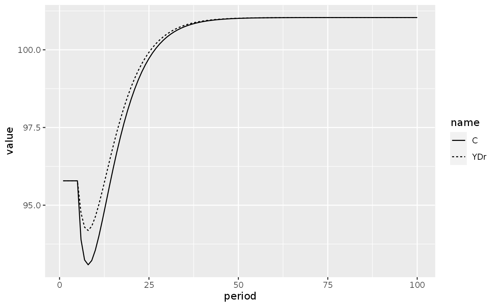
Finally, we plot the evolution of bonds to wealth ratio and the evolution of bills to wealth ratio:
lp2_long %>%
filter(name %in% c("BLV_r", "BhV_r")) %>%
ggplot(aes(x = period, y = value)) +
geom_line(aes(linetype = name))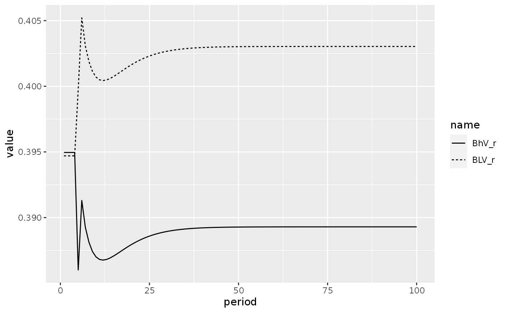
Model LP2
Equations
Let’s move to the model LP2. This model captures the effect of household liquidity preference on long-term interest rates by modifying/or adding equations to the LP model. The reader is invited to check Godley and Lavoie (2007) for further details on the models and equations.
We can use the sfcr_set() function to modify a sfcr_set, saving these modifications to a new object. We use the sfcr_set_index() function to find the id value of the pebl variable, so we can exclude it from the set after we wrote the new definition:
Also note how easily the sfcr package deals with if-else statements in the equations:
sfcr_set_index(lp_eqs) %>%
filter(lhs == "pebl")
#> # A tibble: 1 x 3
#> id lhs rhs
#> <int> <chr> <chr>
#> 1 20 pebl pbl
lp2_eqs <- sfcr_set(
lp_eqs,
pebl ~ pebl[-1] - betae * (pebl[-1] - pbl) + add,
pbl ~ (1 + zeta1 *beta - zeta2*beta) * pbl[-1],
TP ~ (BLh[-1] * pbl[-1]) / (BLh[-1] * pbl[-1] + Bh[-1]),
zeta1 ~ if (TP > top) {1} else {0},
zeta2 ~ if (TP < bot) {1} else {0},
exclude = 20 # Exclude first definition of pebl
)
# lp2_eqs$eq20 = pe_bl ~ pe_bl[-1] - betae * (pe_bl[-1] - p_bl) + add
# lp2_eqs$eq23 = p_bl ~ (1 + zeta1 *beta - zeta2*beta) * p_bl[-1]
# lp2_eqs$eq24 = TP ~ (BL_h[-1] * p_bl[-1]) / (BL_h[-1] * p_bl[-1] + B_h[-1])
# lp2_eqs$eq25 = zeta1 ~ if (TP > top) {1} else {0}
# lp2_eqs$eq26 = zeta2 ~ if (TP < bot) {1} else {0}
#We also need to add the parameters \(beta\_e\), \(beta\), \(top\), and \(bot\) to the list of parameters and remove \(p\_bl\) from the exogenous variables.
I also added a bunch of initial values – taken from Gennaro Zezza’s Eviews code – to get my values as close as possible from the ones presented in the book.
lp2_external <- sfcr_set(
lp_external,
betae ~ 0.5,
beta ~ 0.02,
top ~ 0.505,
bot ~ 0.495,
add ~ 0,
exclude = 3
)
#lp2_external[[3]] <- NULL
# lp2_external[[13]] <- betae ~ 0.5
# lp2_external[[14]] <- beta ~ 0.02
# lp2_external[[15]] <- top ~ 0.505
# lp2_external[[16]] <- bot ~ 0.495
# lp2_external[[17]] <- add ~ 0
# lp2_external[[3]] <- NULL
# lp2_exogenous = list(
# G ~ 20,
# r_b ~ 0.03,
# add ~ 0
# )
lp2_initial = sfcr_set(
YDr ~ 95.803,
V ~ 95.803,
Hh ~ 20.125,
BLd ~ 1.89,
Bh ~ 37.839,
BLh ~ 1.892,
Bs ~ 57.964,
Hs ~ 20.125,
Bcb ~ 20.125,
BLs ~ 1.89,
rbl ~ 0.05,
pebl ~ 20,
pbl ~ 20
)Baseline
We can simulate the model:
lp2 <- sfcr_baseline(
lp2_eqs,
lp2_external,
periods = 100,
initial = lp2_initial,
hidden = c("Hh" = "Hs")
)
lp2 %>% tail()
#> # A tibble: 6 x 46
#> period Y YDr TX V CG C VE Hh Hd Bd BLd Bh
#> <int> <dbl> <dbl> <dbl> <dbl> <dbl> <dbl> <dbl> <dbl> <dbl> <dbl> <dbl> <dbl>
#> 1 95 116. 95.8 23.0 95.8 0 95.8 95.8 20.1 20.1 37.8 1.89 37.8
#> 2 96 116. 95.8 23.0 95.8 0 95.8 95.8 20.1 20.1 37.8 1.89 37.8
#> 3 97 116. 95.8 23.0 95.8 0 95.8 95.8 20.1 20.1 37.8 1.89 37.8
#> 4 98 116. 95.8 23.0 95.8 0 95.8 95.8 20.1 20.1 37.8 1.89 37.8
#> 5 99 116. 95.8 23.0 95.8 0 95.8 95.8 20.1 20.1 37.8 1.89 37.8
#> 6 100 116. 95.8 23.0 95.8 0 95.8 95.8 20.1 20.1 37.8 1.89 37.8
#> # … with 33 more variables: BLh <dbl>, Bs <dbl>, Hs <dbl>, Bcb <dbl>,
#> # BLs <dbl>, ERrbl <dbl>, rbl <dbl>, CGE <dbl>, YDEr <dbl>, pebl <dbl>,
#> # pbl <dbl>, TP <dbl>, zeta1 <dbl>, zeta2 <dbl>, G <dbl>, rb <dbl>,
#> # theta <dbl>, alpha1 <dbl>, alpha2 <dbl>, lambda20 <dbl>, lambda22 <dbl>,
#> # lambda23 <dbl>, lambda24 <dbl>, lambda30 <dbl>, lambda32 <dbl>,
#> # lambda33 <dbl>, lambda34 <dbl>, chi <dbl>, betae <dbl>, beta <dbl>,
#> # top <dbl>, bot <dbl>, add <dbl>Scenario 1
And add a shock to the short interest-rate:
shock_exg <- sfcr_shock(
variables = sfcr_set(rb ~ 0.035),
start = 5,
end = 60)
lp2_s1 <- sfcr_scenario(
lp2,
scenario = shock_exg,
periods = 60
)As before, we create a new tibble with the model in long format:
lp2_s1_long <- lp2_s1 %>%
pivot_longer(cols = -period, names_to = "variable")And plot the variables. We start by plotting the evolution of the share of bonds in government debt held by households (TP), as in Figure 5.6:
lp2_s1_long %>%
filter(variable == 'TP',
period < 51) %>%
ggplot(aes(x = period, y = value)) +
geom_line() +
geom_hline(yintercept = 0.505) +
geom_hline(yintercept = 0.495)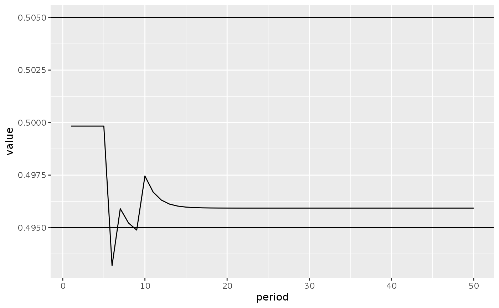
We also can visualize the evolution of interest rates (Figure 5.5):
lp2_s1_long %>%
filter(variable %in% c("rb", "rbl"),
period < 51) %>%
ggplot(aes(x = period, y = value)) +
geom_line() +
facet_wrap(~variable, scales = "free_y")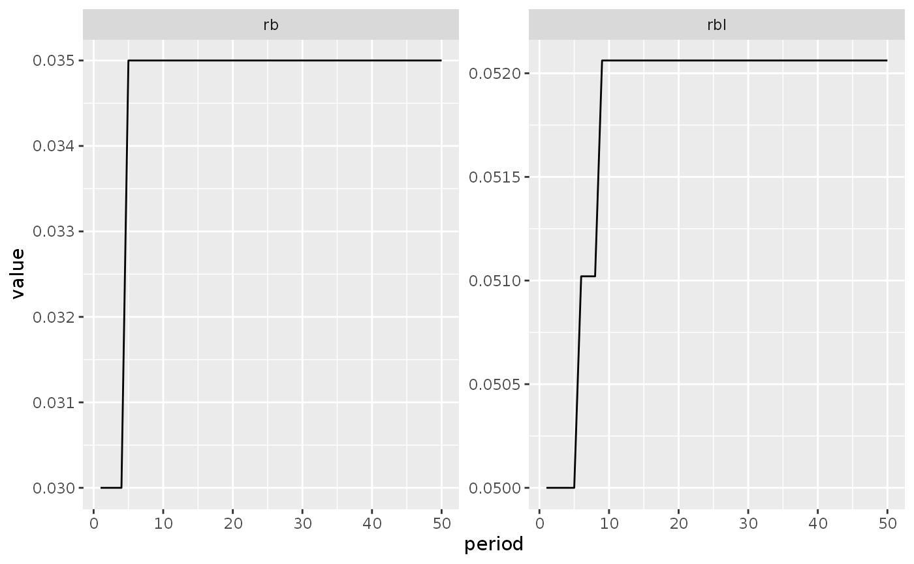
Scenario 2
What would happen if households anticipated a fall in the price of bonds? To see it, we need to create a new scenario adding a one-time shock to the \(add\) component of equation 20.
We do it by adding another shock that takes place on period 6 and end on period 6.
shock2 <- sfcr_shock(
variables = sfcr_set(add ~ -2.8),
start = 5,
end = 6
)
shock3 <- sfcr_shock(
v = sfcr_set(alpha1 ~ 0.6),
s = 5,
e = 60
)
lp2_s2 <- sfcr_scenario(
lp2,
scenario = shock2,
periods = 60
)We create a “long” tibble:
lp2_s2_long <- lp2_s2 %>%
pivot_longer(cols = -period, names_to = "variable")In order to plot the variables.
We start by plotting the evolution of the price of bonds (\(p\_bl\)) and the expected price of bonds (\(pe\_bl\)), as in Figure 5.8:
lp2_s2_long %>%
filter(variable %in% c("pbl", "pebl")) %>%
ggplot(aes(x = period, y = value)) +
geom_line(aes(linetype = variable))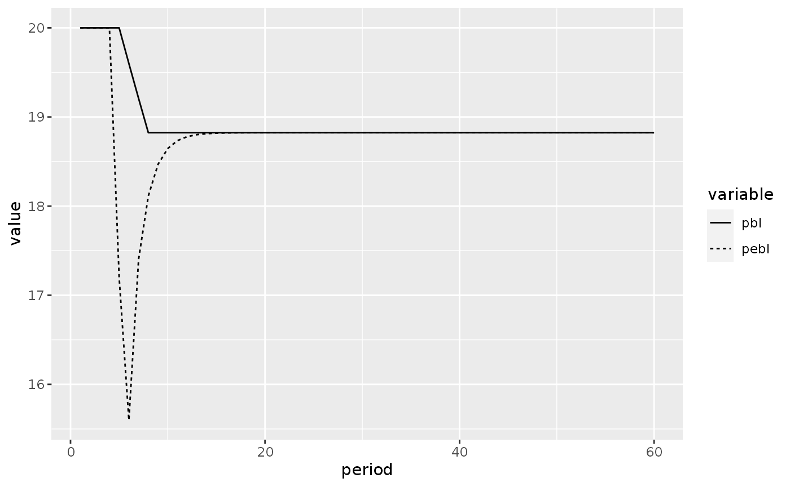
This shock to the expected price of bonds cause the long-term interest rate to rise, as a consequence of the target proportion of bonds in the total government debt aimed by the government:
lp2_s2_long %>%
filter(variable == "TP") %>%
ggplot(aes(x = period, y = value)) +
geom_line(linetype = 2) +
geom_hline(yintercept = 0.505) +
geom_hline(yintercept = 0.495) +
annotate("text", x = 15, y = 0.490, label = "Share of bonds in \ngovernemnt debt \nheld by households")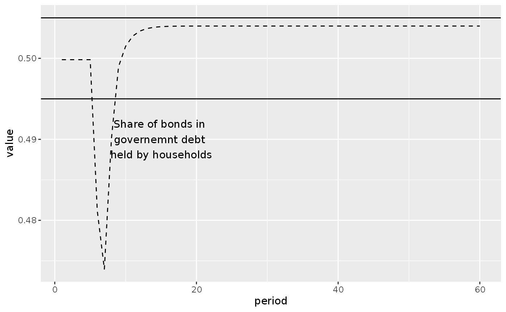
lp2_s2_long %>%
filter(variable == "rbl") %>%
ggplot(aes(x = period, y = value)) +
geom_line(linetype = 2) +
annotate("text", x = 25, y = 0.05195,
label = "Long-term interest rate")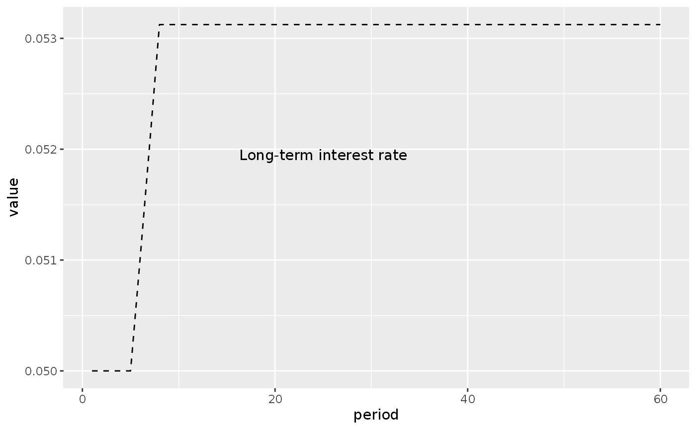
Model LP3: Making government expenditures endogenous
To simulate the model LP3, we need to add four new equations to the model LP2.
Tip: here, it is easier to first simulate a model with \(G\) as an exogenous variable, take note of the value it lands on the steady state, and set the zeta3 and zeta4 parameters afterwards.
lp3_eqs <- sfcr_set(
lp2_eqs,
PSBR ~ (G + rb * Bs[-1] + BLs[-1]) - (TX + rb * Bcb[-1]),
zeta3 ~ if ( (PSBR[-1]/Y[-1]) > 0.03 ) {1} else {0},
zeta4 ~ if ( (PSBR[-1]/Y[-1]) < -0.03 ) {1} else {0},
G ~ G[-1] - (zeta3 + zeta4) * betag * PSBR[-1] + add2
)
# lp3_eqs$eq27 <- PSBR ~ (G + r_b * B_s[-1] + BL_s[-1]) - (TX + r_b * B_cb[-1])
# lp3_eqs$eq28 <- zeta3 ~ if ( (PSBR[-1]/Y[-1]) > 0.03 ) {1} else {0}
# lp3_eqs$eq29 <- zeta4 ~ if ( (PSBR[-1]/Y[-1]) < -0.03 ) {1} else {0}
# lp3_eqs$eq30 <- G ~ G[-1] - (zeta3 + zeta4) * beta_g * PSBR[-1] + add2We also have to add some new parameters and exclude “G” from the external set.
# Find id of G
sfcr_set_index(lp2_external) %>%
filter(lhs == "G")
#> # A tibble: 1 x 3
#> id lhs rhs
#> <int> <chr> <chr>
#> 1 1 G 20
# Define new external set
lp3_external <- sfcr_set(
lp2_external,
betag ~ 1,
add2 ~ 0,
exclude = 1
)
# lp2_external[[1]] <- NULL
#lp3_params[[17]] <- beta_g ~ 1
lp3_initial <- lp2_initialBaseline
lp3 <- sfcr_baseline(
lp3_eqs,
external = lp3_external,
periods = 100,
initial = lp3_initial,
hidden = c("Hs" = "Hh"))
lp3 %>% select(period, G, PSBR, everything())
#> # A tibble: 100 x 51
#> period G PSBR Y YDr TX V CG C
#> <int> <dbl> <dbl> <dbl> <dbl> <dbl> <dbl> <dbl> <dbl>
#> 1 1 1.00e-15 1.00e-15 1.00e-15 95.8 1.00e-15 95.8 1.00e-15 1.00e-15
#> 2 2 0. -1.59e+ 1 9.58e+ 1 78.8 1.89e+ 1 78.8 0. 9.58e+ 1
#> 3 3 1.59e+ 1 5.26e- 4 9.47e+ 1 78.8 1.89e+ 1 78.8 0. 7.88e+ 1
#> 4 4 1.59e+ 1 -4.33e- 1 9.47e+ 1 78.3 1.88e+ 1 78.3 0. 7.88e+ 1
#> 5 5 1.59e+ 1 -3.49e- 1 9.42e+ 1 78.0 1.87e+ 1 78.0 0. 7.83e+ 1
#> 6 6 1.59e+ 1 -2.93e- 1 9.39e+ 1 77.7 1.87e+ 1 77.7 0. 7.80e+ 1
#> 7 7 1.59e+ 1 -2.45e- 1 9.36e+ 1 77.4 1.86e+ 1 77.4 0. 7.77e+ 1
#> 8 8 1.59e+ 1 -2.05e- 1 9.33e+ 1 77.2 1.86e+ 1 77.2 0. 7.74e+ 1
#> 9 9 1.59e+ 1 -1.71e- 1 9.31e+ 1 77.1 1.85e+ 1 77.1 0. 7.72e+ 1
#> 10 10 1.59e+ 1 -1.43e- 1 9.30e+ 1 76.9 1.85e+ 1 76.9 0. 7.71e+ 1
#> # … with 90 more rows, and 42 more variables: VE <dbl>, Hh <dbl>, Hd <dbl>,
#> # Bd <dbl>, BLd <dbl>, Bh <dbl>, BLh <dbl>, Bs <dbl>, Hs <dbl>, Bcb <dbl>,
#> # BLs <dbl>, ERrbl <dbl>, rbl <dbl>, CGE <dbl>, YDEr <dbl>, pebl <dbl>,
#> # pbl <dbl>, TP <dbl>, zeta1 <dbl>, zeta2 <dbl>, zeta3 <dbl>, zeta4 <dbl>,
#> # rb <dbl>, theta <dbl>, alpha1 <dbl>, alpha2 <dbl>, lambda20 <dbl>,
#> # lambda22 <dbl>, lambda23 <dbl>, lambda24 <dbl>, lambda30 <dbl>,
#> # lambda32 <dbl>, lambda33 <dbl>, lambda34 <dbl>, chi <dbl>, betae <dbl>,
#> # beta <dbl>, top <dbl>, bot <dbl>, add <dbl>, betag <dbl>, add2 <dbl>Scenario 1: Reduction in the propensity to consume
What would happen in this model if there was a sharp reduction in the propensity to consume? That’s the objective of this exercise with model LP3.
shock3 <- sfcr_shock(
variables = sfcr_set(alpha1 ~ 0.7),
start = 5,
end = 60
)
lp3_s1 <- sfcr_scenario(
lp3,
scenario = list(shock3),
period = 60
) %>% mutate(
PSBR_Y = PSBR / Y
)
lp3_s1_long <- lp3_s1 %>% pivot_longer(cols = -period, names_to = "variable")Here we can see that the fall in output is permanent:
lp3_s1_long %>%
filter(variable == "Y") %>%
ggplot(aes(x = period, y = value)) +
geom_line()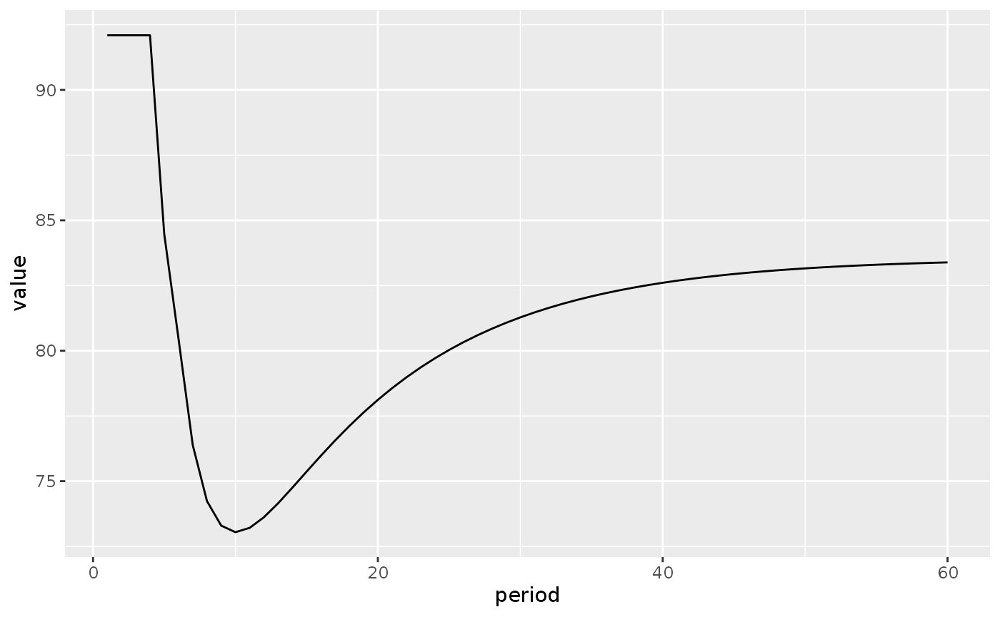
This result contrasts with the long-run effect of a reduction in the propensity to consume arrived with the LP model:
lp1_s2 <- sfcr_scenario(
lp,
scenario = list(shock3),
periods = 60
)
lp1_s2_long <- lp1_s2 %>% pivot_longer(cols = -period, names_to = "variable")
lp1_s2_long %>%
filter(variable == "Y") %>%
ggplot(aes(x = period, y = value)) +
geom_line()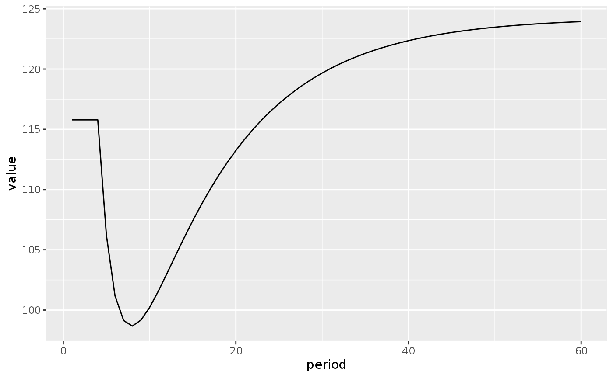
In the LP model, the steady-state output level is higher than before the shock because the consumption out of the wealth ends up more than compensating the initial fall in output.
In model LP3, however, the initial fall in output increases the government deficit, and this causes the government to reduce its expenditures:
lp3_s1_long %>%
filter(variable %in% c("G", "PSBR_Y"),
period < 51) %>%
ggplot(aes(x = period, y = value)) +
geom_line() +
facet_wrap(~ variable, scales = "free_y")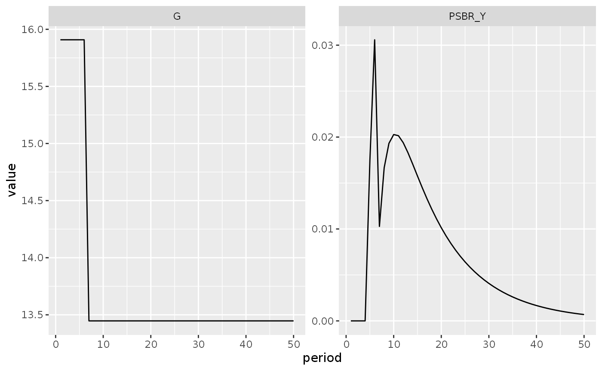